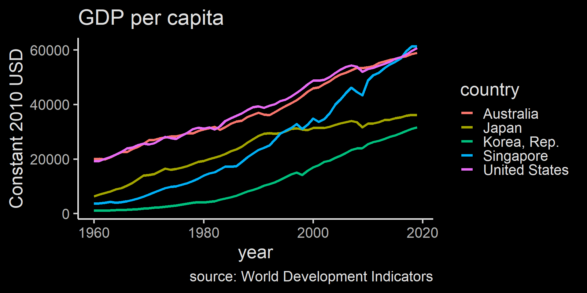
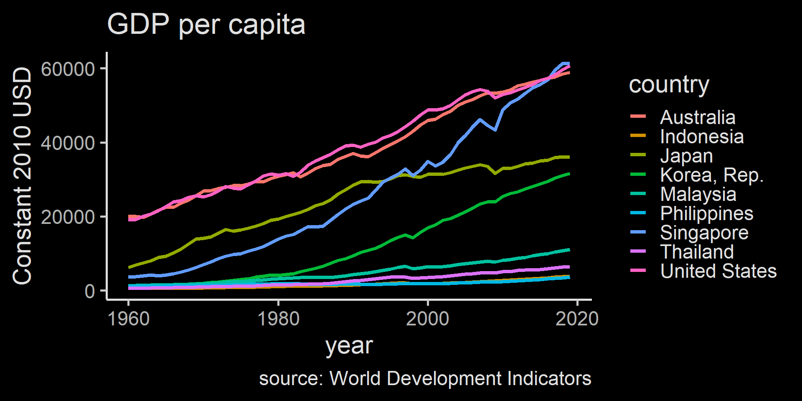
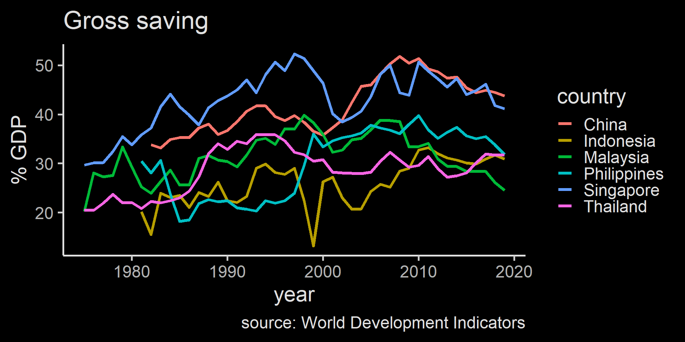
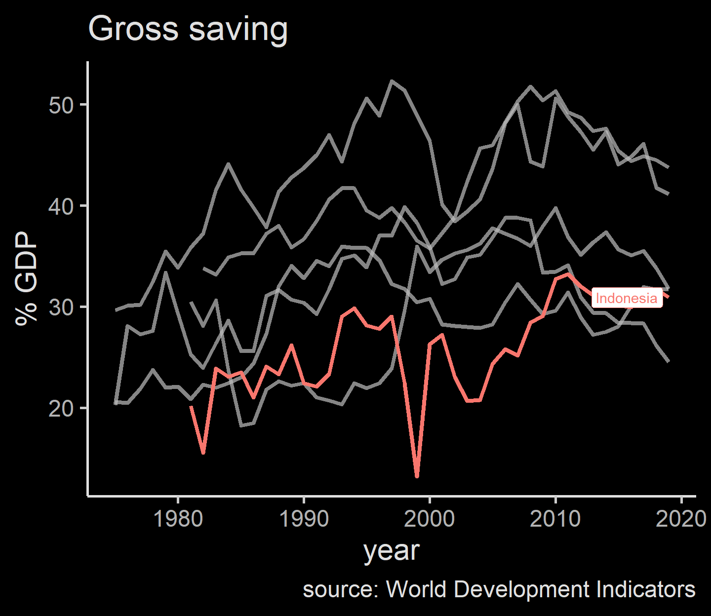
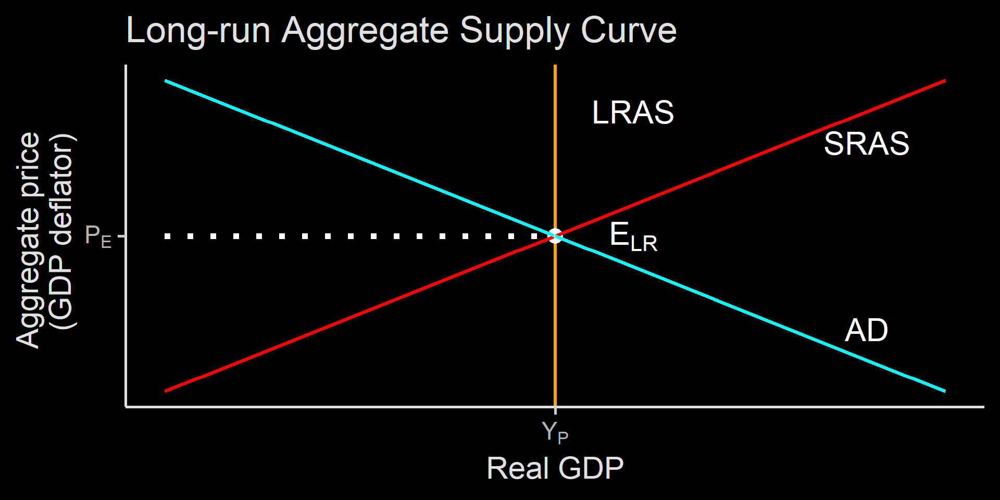

Ilmu Ekonomi
Pertemuan 10
Prodi PIWAR Politeknik APP Jakarta
Today
Long-run growth
AD-AS model
Measuring economic growth
\[
\text{growth}=\frac{\text{real GDP}_2-\text{real GDP}_1}{\text{real GDP}_1} \times 100 \%
\]
Growth determinant
Advance countries usually grows at around 2% rate.
Indonesia grows somewhere around 5% these days.
Economic growth ensure the people in the country gets richer.
- Electricity was a luxury back in the 1940s, now we take it for granted.
- Only rich people use cellphones back in late 1990s.
Productivity growth
Increasing the number of worker can increase GDP, but it won’t last long.
When we have an economic growth that is long lasting, we call it sustained economic growth.
We can only sustain economic growth by increasing productivity.
The term productivity usually refer to how much output can a country produce given the same number of labour.
We often measure them with \(\frac{GDP}{labour}\)
Determinant of productivity
Three main determinant of productivity:
- Increase in physical capital. A farmer with a tractor can plow more acres of land than with a hoe or a bull.
- Increase in human capital. Usually measured by education and training.
- Technological progress, such as the invention of combustion engines, internet, etc. While major invention is important, Note that it is also important to consider smaller technological progress such as a simple post-it.
A note on education in Indonesia
Number of workers by educational attainment
| No formal education |
12,612,237 |
5,670,322 |
3,396,863 |
| Not finished elementary |
19,151,150 |
12,982,233 |
15,448,193 |
| Elementary |
22,005,947 |
36,963,023 |
33,188,745 |
| Junior high |
5,383,600 |
19,396,319 |
23,827,254 |
| General high school |
2,523,131 |
13,899,839 |
24,372,684 |
| Vocational high school |
2,828,990 |
6,708,513 |
15,690,637 |
| Diploma |
574,248 |
2,660,606 |
3,732,368 |
| University |
305,088 |
3,769,002 |
13,636,122 |
| Total |
65,384,391 |
102,049,857 |
133,292,866 |
| a Source: BPS |
|
|
|
A note on education in Indonesia
Fraction of total workers by educational attainment
| No formal education |
19.29 |
5.56 |
2.55 |
| Not finished elementary |
29.29 |
12.72 |
11.59 |
| Elementary |
33.66 |
36.22 |
24.90 |
| Junior high |
8.23 |
19.01 |
17.88 |
| General high school |
3.86 |
13.62 |
18.29 |
| Vocational high school |
4.33 |
6.57 |
11.77 |
| Diploma |
0.88 |
2.61 |
2.80 |
| University |
0.47 |
3.69 |
10.23 |
| Total |
100.00 |
100.00 |
100.00 |
| a Source: BPS |
|
|
|
Diminishing returns
- Remember our discussion on firm’s cost: capital induce decreasing returns!
- As we increase capital, the gain is lower.
- Back to our farmer example:
- Having one additional tractor from zero tractor will greatly increase productivity.
- Adding a second tractor may not be as useful in increasing productivity as the first one.
- In a micro-perspective, the farmer may invest in something else instead of buying another tractor.
Diminishing returns
However, in macro perspective, a country will eventually running out place to invest in.
The returns to additional physical capital is diminishing as a country grows its capital stock.
Education is the same: the number of educated citizen can only increase so much.
At the same time, technological advancement can be transferred in some ways.
- Being a follower actually helps in this case!
This leads to the convergence theorem
East asian convergence
Japan caught up in 90s, Singapore in post-GFC

South-east Asia not-so-converging?
On the contrary, there’s divergence in ASEAN. Why?

Why growth rate differs?
Saving and investment spending
Some countries accumulate capital much faster than others. Where’s the money come from?
- Domestic saving. Japan, China and Singapore’s saving rate was high during their high growth time.
- Foreign saving. Or in other words, other country’s saving.
While foreign investment definitely helps, many high-performing investing countries start with high domesting saving.
Saving rate in ASEAN (and China)
Indonesian save less compared to peers

Saving rate in ASEAN (and China)
Indonesian save less compared to peers

Why growth rate differs?
Education
- Some countries catch up with education very quickly, much more so than others.
Research and development
Why growth rate differs?
Government have big role
Government can speed up building high fixed cost capital such as electricity, internet, ports, roads and so on.
Government can also subsidize education and R&D since it has positive externalities.
Maintaining a well-function financial system.
Protecting property rights and improve stability and good governance.
Devise environmentally friendly policy
AD-AS Framework
The AD-AS framework for macroeconomics is very similar with our perfect market framework in the first half.
We learned that demand curve is downward sloping , while supply curve is upward sloping.
The supply curve is a flat line in the long run because firms can adjust to demand in the long run by changing fixed cost and entering and exiting the market.
In AD-AS framework, there are a little bit of difference: it is representing not one market, but every market in a country.
AD-AS Framework
In the market framework, y-axis is the price level while x-axis is the quantity produced and consumed.
In AD-AS, y-axis is the aggregate price. We usually use GDP deflator but can also use CPI.
We use real GDP on the x-axis.
Note that it is still Quantity and Price, but we use aggregate.
What is the implication of using aggregate?
AD-AS Framework
In the perfect market framework, the law of demand dictates that when price increase, quantity demanded goes down: hence the negative slope.
When a good price increases, consumers tend to lower the quantity because of ceteris paribus
- if its substitute held constant, the consumer change to buying the substitute.
- A consumer can also choose to save if the price gets above their WTP.
AD-AS Framework
- This does not work in aggregate:
- Whether you buy rice or noodle or even car, you do not change your consumption in aggregate.
- When you save, it is also counted as GDP.
- This is because how we calculate GDP:
\[
GDP = C+I+G+(X-M)
\]
where \(C\) is consumption, \(I\) is investment (which comes from saving), \(G\) is government expenditure (which comes mostly from taxes), and \((X-M)\) is export minus import (aka. trade balance)
Aggregate Demand
Aggregate demand is still downward sloping. This is because when aggregate price level increases \(P \uparrow\) :
The aggregate number of goods and services you can purchase given your current asset level is reduced. this is called The wealth effect. \(C \downarrow\)
You need more money to buy the same goods, which leads to less money in the bank. Less saving leads to higher interest rate, which increases borrowing cost and reduces investment. This is called The interest rate effect. \(I \downarrow\)
\[C \downarrow + I \downarrow + G + (X-M) = GDP \downarrow\]
Side note
I often use “saving” very liberally: any income you dont’s spend is saving, even if you just keep in in your pocket.
We will learn how saving and changes in interest rate mechanism works later.
For now, the most important thing is the theoretical relationship between Aggregate Demand (measured by Real GDP) and inflation.
What shifts AD curve?
When things other than aggregate price changes, we shift the AD curve. These things are:
- Change in expectations. When people prepare for the worst, people stop spending and business stop investing.
- Change in wealth. When your asset prices go down, your purchasing power also go down so you consume less.
- Size of physical capital. When there are more physical capital, your current physical capital’s worth declines.
all of the above examples leads to movement of AD curve to the left.
Government Policy
Government policy can also move AD curve.
- Two ways using fiscal policy:
- Increasing government spending leads to AD moves to the right because \(G \uparrow\)
- A tax cut leads to more disposable income for people which leads to \(C \uparrow\)
- Monetary policy is central bank’s tool. They control how much money exists in the market. Adding liquidity by creating more money or lowering base rate leads to higher demand.
Aggregate supply
Aggregate supply is a bit similar to the market analysis.
- There are two different AS curves: short-run and long-run
The short-run aggregate supply (SRAS) is upward sloping: when aggregate price level goes down, quantity supplied goes down as well.
Profit = selling price minus production cost. When selling price changes, production cost can be hard to adjust.
This is caused by sticky wages in the short run.
Sticky wage
nominal wage typically does not move in the short-run:
- nominal wage usually written in a contract.
- especially if there’s minimum wage.
in the long run, minimum wage can be revised, and contracts can be renewed.
note that some wage can adjust quickly (think of Gojek’s surge pricing).
However, since most are sticky, in aggregate, nominal wage is still quite sticky.
Sticky wage
The sticky wage forces producer to reduce output when price is decreasing.
On the other hand, when demand is strong, some firms increasing output while increasing their price as well because increasing output cannot be done quickly.
This leads to positive relationship between aggregate price level and short-run aggregate supply.
What shifts SRAS
Changes in commodity prices. Commodities (oil, CPO, minerals) are counted as inputs, so their price change are not included in the GDP. When prices of these things go up, the final goods produced is reduced and SRAS shifts to the left.
Changes in nominal wages. In the long-run, nominal wage will change: when in go up, SRAS shifts to the left.
changes in productivity. Any improvement to productivity shifts SRAS to the right.
Long Run Aggregate Supply Curve (LRAS)
In the short-run, price changes is faster than changes in input prices and wages.
In the long-run, input prices and wages adjusts:
- if firms reduce output, they reduce demand for labour and inputs. In turn, prices for these things go down as well.
What will happen when both prices of final goods and inputs reduce? The answer is nothing.
In the long-run, adjustment of prices leads to no change in aggregate output / GDP.
In the short-run, changes in price will be followed by changes in supply because input prices are sticky
In the long-run, changes in all prices do not matter to output. Only technological progress shifts LRAS.
From SRAS to LRAS
Think of SRAS as the business cycle: output cycles between boom and bust.
In the long-run, long-run economic growth tend to stabilize and increases steadily.
We tend to say the discrepancy between recession / booming period to long-run growth path as deviation to potential output.
Eventually, economist believe that after a recession, the economy will slowly return to its long-run growth path and reach its potential output. This is called self-correction mechanism.
Self-correction mechanism
When an economy in a recession, it produces below its potential output.
slow production where wage is sticky leads to high unemployment rate, or unemployment rate above the natural unemployment rate.
High unemployment rate leads to lower wage level in the long-run.
lower wage leads to low unemployment, which leads to increase in production and return to its potential output.
A positive demand shock (e.g. government stimulus) leads to a shifts of AD and movement along the SRAS curve, ended up with higher output and an increase in aggregate prices.
A positive supply shock (e.g. reduction of oil price) leads to a shifts of AS and movement along the AD curve, ended up with higher output and lower prices.
AD-AS model
Negative demand shock gives you the opposite of positive demand shock. Negative supply shock gives you the opposite impact of positive supply shock.
| Positive demand |
\(\overrightarrow{AD}\) |
\(\Uparrow\) |
\(\Uparrow\) |
| Negative demand |
\(\overleftarrow{AD}\) |
\(\Downarrow\) |
\(\Downarrow\) |
| Positive supply |
\(\overrightarrow{SRAS}\) |
\(\Downarrow\) |
\(\Uparrow\) |
| Negative supply |
\(\overleftarrow{SRAS}\) |
\(\Uparrow\) |
\(\Downarrow\) |
The negative supply shock leads to a stagflation
Long-run macroeconomic equilibrium
In the long-run, supply is starting to adjust and the self-correcting mechanism works.
Remember that in the long-run, output will not stay low or stay high: it will eventually return to its potential long-run growth.
Therefore, in the long-run, output level will return to normal.
Long-run macroeconomic equilibrium

First, positive demand shock leads to higher prices and output level. Firms hire more labour to meet the demand and thus reduces unemployment in the short run.
However, as unemployment falls below its natural rate, wage begin to go up and it adds up to the cost of production, pushing price further up. employment starts to decrease and Y falls back.
Long-run self-correction mechanism
You can reach the similar conclusion for a long-run negative demand shock, which leads to even lower prices and the same output.
To us, price level matter less if everyone can consume the same amount of goods and services:
- that is, price changes do not matter if GDP stays the same.
- in Australia, everything is more expensive but wage level is far above Indonesia.
Long-run self-correction
If economy is going to return to its normal level eventually, why would we need to do anything at all?
The answer is because a “long-run” may take some time to adjust.
- The world has not really go back to its potential output level after Global Financial Crisis in 2008.
- Indonesian growth rate never return to pre-1998 level.
In long-run we all dead
Since Keynesianism dominates economic thinking, it is believed that government policies are needed to stabilize economy.
We will learn further how government policies try to stabilize economy.
We also will learn the monetary policy and how interest rate interact with the economy.
Sum-up
We have learned how we measure aggregate prices, unemployment and GDP.
We also learned how they are interact:
- economic expansion tends to be followed by inflation and lower unemployment.
- There is also a possible stagflation where economy stagnate, unemployment is high but also inflation.
Next-up: government policies and monetary policy.